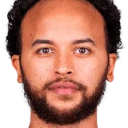

His teams won 2 titles: 2013-14 and 2018-19. In his 798 games for 3 teams over 14 seasons they went 569–229 (71.3%), +340 games over .500, with an average final finish of 6.9.
Final NBA finish, season by season
Title Finals Other playoffs Missed. #1 = champion; the dashed line is last place that season. Each point opens that season's final standings.
All 30 teams ranked in 2018-19, his best finish (#1)Teammate help
Most of it came from
- Tony Parker 12.0 points over 3 seasons
- Tim Duncan 9.0 points over 2 seasons
- LaMarcus Aldridge 7.0 points over 2 seasons
In his 4 seasons with help between 2.2 and 3.8 points, his best final finish was #3 of 30 (2020-21) and his worst #10 of 30 (2024-25).
Help by season · Compare with a peer · How help and peers work
Career
Career: regular seasons 1946-47 through 2025-26. 2026-27 (games through Nov. 16, 2026) is shown separately and is not in these totals. Each card opens its leaderboard with him highlighted. How we count.
Latest completed seasons
- 2025-26 LA Clippers: #19 of 30, 42–40, Missed the playoffs
- 2024-25 LA Clippers: #10 of 30, 50–32, Lost first round to Denver Nuggets 3–4
- 2023-24 LA Clippers: #8 of 30, 51–31, Lost first round to Dallas Mavericks 2–4
2026-27 so far
Games through Nov. 16, 2026, the last game in the nightly data. Not included in the career numbers (completed seasons through 2025-26) until the season ends. No final finish until the season ends.
| Team | His games | With him | Without him | Gap | On/off per 100 | Started / bench | Close games |
|---|---|---|---|---|---|---|---|
| Toronto Raptors | 2 | 2–0 100.0% | 3–8 27.3% | +72.7 pp | −37.6 | 2–0 / N/A | N/A |
Season by season
Newest first; every header sorts. Final NBA finish is the team's rank among all teams that season (#1 = champion) and opens that season's standings. "Without him" uses the team-season window; the span line counts only the games between his first and last game for the team.
| 2025-26 | LA ClippersRegular season: 3rd in Pacific, 8th in West | #19 of 30 | 42–40 51.2% | Missed the playoffs | 65 of 82 | 37–28 56.9% | 5–12 29.4%span: 4–12, gap +31.9 pp | +27.5 pp |
| 2024-25 | LA ClippersRegular season: 1st in Pacific, 3rd in West | #10 of 30 | 50–32 61.0% | Lost first round to Denver Nuggets 3–4 | 37 of 82 | 26–11 70.3% | 24–21 53.3%span: 5–6, gap +24.8 pp | +16.9 pp |
| 2023-24 | LA ClippersRegular season: 1st in Pacific, 4th in West | #8 of 30 | 51–31 62.2% | Lost first round to Dallas Mavericks 2–4 | 68 of 82 | 44–24 64.7% | 7–7 50.0%span: 3–3, gap +14.7 pp | +14.7 pp |
| 2022-23 | LA ClippersRegular season: 3rd in Pacific, 5th in West | #14 of 30 | 44–38 53.7% | Lost first round to Phoenix Suns 1–4 | 52 of 82 | 33–19 63.5% | 11–19 36.7%span: 11–19, gap +26.8 pp | +26.8 pp |
| 2020-21 | LA ClippersRegular season: 2nd in Pacific, 15th in West | #3 of 30 | 47–25 65.3% | Lost conference finals to Phoenix Suns 2–4 | 52 of 72 | 36–16 69.2% | 11–9 55.0%span: 11–7, gap +8.1 pp | +14.2 pp |
| 2019-20 | LA ClippersRegular season: 2nd in Pacific, 2nd in West | #7 of 30 | 49–23 68.1% | Lost conference semifinals to Denver Nuggets 3–4 | 57 of 72 | 41–16 71.9% | 8–7 53.3%span: 7–7, gap +21.9 pp | +18.6 pp |
| 2018-19 | Toronto RaptorsRegular season: 1st in Atlantic, 2nd in East | #1 of 30 | 58–24 70.7% | Won the title, beat Golden State Warriors 4–2 in the Finals | 60 of 82 | 41–19 68.3% | 17–5 77.3%span: 17–5, gap −8.9 pp | −8.9 pp |
| 2017-18 | San Antonio SpursRegular season: 3rd in Southwest, 7th in West | #12 of 30 | 47–35 57.3% | Lost first round to Golden State Warriors 1–4 | 9 of 82 | 5–4 55.6% | 42–31 57.5%span: 5–3, gap −6.9 pp | −2.0 pp |
| 2016-17 | San Antonio SpursRegular season: 1st in Southwest, 2nd in West | #3 of 30 | 61–21 74.4% | Lost conference finals to Golden State Warriors 0–4 | 74 of 82 | 54–20 73.0% | 7–1 87.5%span: 7–1, gap −14.5 pp | −14.5 pp |
| 2015-16 | San Antonio SpursRegular season: 1st in Southwest, 2nd in West | #5 of 30 | 67–15 81.7% | Lost conference semifinals to Oklahoma City Thunder 2–4 | 72 of 82 | 60–12 83.3% | 7–3 70.0%span: 6–3, gap +16.7 pp | +13.3 pp |
| 2014-15 | San Antonio SpursRegular season: 3rd in Southwest, 6th in West | #9 of 30 | 55–27 67.1% | Lost first round to Los Angeles Clippers 3–4 | 64 of 82 | 46–18 71.9% | 9–9 50.0%span: 8–9, gap +24.8 pp | +21.9 pp |
| 2013-14 | San Antonio SpursRegular season: 1st in Southwest, 1st in West | #1 of 30 | 62–20 75.6% | Won the title, beat Miami Heat 4–1 in the Finals | 66 of 82 | 54–12 81.8% | 8–8 50.0%span: 8–8, gap +31.8 pp | +31.8 pp |
| 2012-13 | San Antonio SpursRegular season: 1st in Southwest, 2nd in West | #2 of 30 | 58–24 70.7% | Lost NBA Finals to Miami Heat 3–4 | 58 of 82 | 43–15 74.1% | 15–9 62.5%span: 15–9, gap +11.6 pp | +11.6 pp |
| 2011-12 | San Antonio SpursRegular season: 1st in Southwest, 1st in West | #3 of 30 | 50–16 75.8% | Lost conference finals to Oklahoma City Thunder 2–4 | 64 of 66 | 49–15 76.6% | 1–1 50.0%span: 0–1, gap +76.6 pp | +26.6 pp |
On/off, starts and close games
From the lineup data, 1996-97 on. On/off is net points per 100 possessions with him on the floor minus off, a different unit from the win-rate gaps. Started and off the bench are team records in those games; close games are those within 5 points in the last 5 minutes with him on the floor.
| 2025-26 | LA Clippers | +13.8 | 37–28 56.9% | N/A | 10–8 55.6% |
| 2024-25 | LA Clippers | +7.5 | 26–11 70.3% | N/A | 7–7 50.0% |
| 2023-24 | LA Clippers | +13.3 | 44–24 64.7% | N/A | 18–14 56.2% |
| 2022-23 | LA Clippers | +7.9 | 32–18 64.0% | 1–1 50.0% | 17–12 58.6% |
| 2020-21 | LA Clippers | +10.9 | 36–16 69.2% | N/A | 9–13 40.9% |
| 2019-20 | LA Clippers | +15.4 | 41–16 71.9% | N/A | 15–8 65.2% |
| 2018-19 | Toronto Raptors | +13.4 | 41–19 68.3% | N/A | 19–13 59.4% |
| 2017-18 | San Antonio Spurs | −0.2 | 5–4 55.6% | N/A | N/A |
| 2016-17 | San Antonio Spurs | +5.0 | 54–20 73.0% | N/A | 26–11 70.3% |
| 2015-16 | San Antonio Spurs | +7.1 | 60–12 83.3% | N/A | 16–8 66.7% |
| 2014-15 | San Antonio Spurs | +10.2 | 46–18 71.9% | N/A | 12–10 54.5% |
| 2013-14 | San Antonio Spurs | −0.2 | 53–12 81.5% | 1–0 100.0% | 16–4 80.0% |
| 2012-13 | San Antonio Spurs | +8.8 | 42–15 73.7% | 1–0 100.0% | 22–7 75.9% |
| 2011-12 | San Antonio Spurs | −5.3 | 31–8 79.5% | 18–7 72.0% | 15–5 75.0% |
Teammate help by season
Help = the Teammates Score weights (MVP and Finals MVP 10, All-NBA 1st 4, DPOY 4, All-NBA 2nd 3, All-NBA 3rd 2, All-Star 1 and smaller honors) for the honors his teammates won that season, counting only teammates who shared at least one game with him for that team. Entering = the same teammates' honors from the season before, so it does not reflect the season being compared. 0 means no honored teammate; a + means a teammate's record is missing.
| Teammates behind it | ||||
|---|---|---|---|---|
| 2025-26 | LA Clippers | 0 | 4.5 | James Harden honors the season before (0; 32 games together); Darius Garland honors the season before (0; 17 games together); Ivica Zubac honors the season before (0; 30 games together) |
| 2024-25 | LA Clippers | 3.5 | 0 | James Harden All-NBA 3rd, All-Star (3.0; 37 games together); Ivica Zubac All-Def 2nd (0.5; 37 games together) |
| 2023-24 | LA Clippers | 1.0 | 1.0 | Paul George All-Star (1.0; 63 games together) |
| 2022-23 | LA Clippers | 1.0 | 0.1 | Paul George All-Star (1.0; 38 games together); Bones Hyland honors the season before (0; 12 games together) |
| 2020-21 | LA Clippers | 3.0 | 0.5 | Paul George All-NBA 3rd, All-Star (3.0; 43 games together); Patrick Beverley honors the season before (0; 31 games together) |
| 2019-20 | LA Clippers | 1.0 | 6.6 | Montrezl Harrell Sixth Man (0.5; 50 games together); Patrick Beverley All-Def 2nd (0.5; 44 games together); Paul George honors the season before (0; 37 games together); Louis Williams honors the season before (0; 52 games together); Landry Shamet honors the season before (0; 44 games together) |
| 2018-19 | Toronto Raptors | 1.2 | 1.0 | Kyle Lowry All-Star (1.0; 43 games together); Pascal Siakam MIP (0.2; 59 games together) |
| 2017-18 | San Antonio Spurs | 4.5 | 0.5 | LaMarcus Aldridge All-NBA 2nd, All-Star (4.0; 8 games together); Dejounte Murray All-Def 2nd (0.5; 9 games together); Danny Green honors the season before (0; 6 games together) |
| 2016-17 | San Antonio Spurs | 0.5 | 4.0 | Danny Green All-Def 2nd (0.5; 61 games together); LaMarcus Aldridge honors the season before (0; 67 games together); Pau Gasol honors the season before (0; 60 games together) |
| 2015-16 | San Antonio Spurs | 3.0 | 7.5 | LaMarcus Aldridge All-NBA 3rd, All-Star (3.0; 67 games together); Tim Duncan honors the season before (0; 55 games together) |
| 2014-15 | San Antonio Spurs | 3.5 | 4.0 | Tim Duncan All-Def 2nd, All-NBA 3rd, All-Star (3.5; 61 games together); Tony Parker honors the season before (0; 59 games together) |
| 2013-14 | San Antonio Spurs | 4.0 | 9.5 | Tony Parker All-NBA 2nd, All-Star (4.0; 57 games together); Tim Duncan honors the season before (0; 60 games together) |
| 2012-13 | San Antonio Spurs | 9.5 | 4.0 | Tim Duncan All-Def 2nd, All-NBA 1st, All-Star (5.5; 50 games together); Tony Parker All-NBA 2nd, All-Star (4.0; 46 games together) |
| 2011-12 | San Antonio Spurs | 4.0 | 4.2 | Tony Parker All-NBA 2nd, All-Star (4.0; 59 games together); Manu Ginobili honors the season before (0; 34 games together); Tim Duncan honors the season before (0; 57 games together); Gary Neal honors the season before (0; 55 games together) |
Compare with a peer
 Kawhi Leonard vs Anthony DavisCareers centered on 2018-19 and 2018-19; help 2.8 and 2.6 points per season; own honors 4.2 and 2.4 per season; 798 and 807 games.
Kawhi Leonard vs Anthony DavisCareers centered on 2018-19 and 2018-19; help 2.8 and 2.6 points per season; own honors 4.2 and 2.4 per season; 798 and 807 games. Kawhi Leonard vs Kevin DurantCareers centered on 2018-19 and 2015-16; help 2.8 and 3.3 points per season; own honors 4.2 and 4.5 per season; 798 and 1,201 games.
Kawhi Leonard vs Kevin DurantCareers centered on 2018-19 and 2015-16; help 2.8 and 3.3 points per season; own honors 4.2 and 4.5 per season; 798 and 1,201 games. Kawhi Leonard vs James HardenCareers centered on 2018-19 and 2017-18; help 2.8 and 3.4 points per season; own honors 4.2 and 2.7 per season; 798 and 1,221 games.
Kawhi Leonard vs James HardenCareers centered on 2018-19 and 2017-18; help 2.8 and 3.4 points per season; own honors 4.2 and 2.7 per season; 798 and 1,221 games.
Record against each opponent
- Best regular-season record against one franchise: 17–3 (85.0%) against the Charlotte Hornets in 20 games.
- Toughest regular-season record against one franchise: 16–13 (55.2%) against the Oklahoma City Thunder in 29 games.
- Most playoff series against one franchise: 4 against the Dallas Mavericks, 3–1 in series and 12–10 in games.
Regular season, completed seasons: 798 games, 569–229, against 30 franchises. Grouped by franchise (named as today); game lists keep each team's name that season.
| Games list | |||||||
|---|---|---|---|---|---|---|---|
| Los Angeles LakersMost-faced: LeBron James (20 games) · Head-to-Head | 42 | 28–14 | 66.7% | +14 | 1–0 (4–0 in games) | 2011-12 to 2025-26 | |
| Dallas MavericksMost-faced: Dwight Powell (23 games) · Head-to-Head | 39 | 30–9 | 76.9% | +21 | 3–1 (12–10 in games) | 2011-12 to 2025-26 | |
| New Orleans Pelicansas New Orleans HornetsMost-faced: Anthony Davis (15 games) · Head-to-Head | 38 | 24–14 | 63.2% | +10 | N/A | 2011-12 to 2025-26 | |
| Minnesota TimberwolvesMost-faced: Ricky Rubio (17 games) · Head-to-Head | 36 | 25–11 | 69.4% | +14 | N/A | 2011-12 to 2025-26 | |
| Denver NuggetsMost-faced: Nikola Jokic (21 games) · Head-to-Head | 35 | 22–13 | 62.9% | +9 | 0–2 (6–8 in games) | 2011-12 to 2025-26 | |
| Golden State WarriorsMost-faced: Draymond Green (30 games) · Head-to-Head | 35 | 25–10 | 71.4% | +15 | 2–1 (8–5 in games) | 2011-12 to 2025-26 | |
| Houston RocketsMost-faced: James Harden (22 games) · Head-to-Head | 35 | 20–15 | 57.1% | +5 | 1–0 (3–2 in games) | 2011-12 to 2025-26 | |
| Phoenix SunsMost-faced: Devin Booker (19 games) · Head-to-Head | 35 | 27–8 | 77.1% | +19 | 0–1 (1–1 in games) | 2011-12 to 2025-26 | |
| Sacramento KingsMost-faced: DeMarcus Cousins (16 games) · Head-to-Head | 35 | 28–7 | 80.0% | +21 | N/A | 2011-12 to 2025-26 | |
| Utah JazzMost-faced: Derrick Favors (23 games) · Head-to-Head | 34 | 24–10 | 70.6% | +14 | 2–0 (6–2 in games) | 2011-12 to 2025-26 | |
| Memphis GrizzliesMost-faced: Mike Conley (18 games) · Head-to-Head | 33 | 24–9 | 72.7% | +15 | 3–0 (12–2 in games) | 2011-12 to 2025-26 | |
| Portland Trail BlazersMost-faced: Damian Lillard (20 games) · Head-to-Head | 33 | 22–11 | 66.7% | +11 | 1–0 (4–1 in games) | 2011-12 to 2025-26 | |
| Oklahoma City ThunderMost-faced: Russell Westbrook (17 games) · Head-to-Head | 29 | 16–13 | 55.2% | +3 | 1–2 (8–10 in games) | 2011-12 to 2025-26 | |
| Brooklyn Netsas New Jersey NetsMost-faced: Joe Harris (10 games) · Head-to-Head | 24 | 18–6 | 75.0% | +12 | N/A | 2011-12 to 2025-26 | |
| New York KnicksMost-faced: Carmelo Anthony (8 games) · Head-to-Head | 23 | 15–8 | 65.2% | +7 | N/A | 2011-12 to 2025-26 | |
| Cleveland CavaliersMost-faced: Tristan Thompson (15 games) · Head-to-Head | 22 | 16–6 | 72.7% | +10 | N/A | 2011-12 to 2025-26 | |
| Milwaukee BucksMost-faced: Giannis Antetokounmpo (17 games) · Head-to-Head | 22 | 13–9 | 59.1% | +4 | 1–0 (4–2 in games) | 2011-12 to 2025-26 | |
| Orlando MagicMost-faced: Nikola Vucevic (14 games) · Head-to-Head | 22 | 17–5 | 77.3% | +12 | 1–0 (4–1 in games) | 2011-12 to 2025-26 | |
| Philadelphia 76ersMost-faced: Tobias Harris (7 games) · Head-to-Head | 21 | 16–5 | 76.2% | +11 | 1–0 (4–3 in games) | 2011-12 to 2025-26 | |
| Charlotte Hornetsas Charlotte BobcatsMost-faced: Kemba Walker (10 games) · Head-to-Head | 20 | 17–3 | 85.0% | +14 | N/A | 2011-12 to 2025-26 | |
| Atlanta HawksMost-faced: Jeff Teague (8 games) · Head-to-Head | 19 | 16–3 | 84.2% | +13 | N/A | 2011-12 to 2025-26 | |
| Boston CelticsMost-faced: Marcus Smart (12 games) · Head-to-Head | 19 | 13–6 | 68.4% | +7 | N/A | 2011-12 to 2025-26 | |
| Chicago BullsMost-faced: Taj Gibson (7 games) · Head-to-Head | 19 | 16–3 | 84.2% | +13 | N/A | 2012-13 to 2025-26 | |
| Miami HeatMost-faced: Bam Adebayo (9 games) · Head-to-Head | 19 | 15–4 | 78.9% | +11 | 1–1 (7–5 in games) | 2011-12 to 2025-26 | |
| Toronto RaptorsMost-faced: DeMar DeRozan (8 games) · Head-to-Head | 19 | 16–3 | 84.2% | +13 | N/A | 2011-12 to 2025-26 | |
| Washington WizardsMost-faced: Bradley Beal (10 games) · Head-to-Head | 19 | 17–2 | 89.5% | +15 | N/A | 2011-12 to 2025-26 | |
| Detroit PistonsMost-faced: Andre Drummond (10 games) · Head-to-Head | 18 | 14–4 | 77.8% | +10 | N/A | 2011-12 to 2025-26 | |
| Indiana PacersMost-faced: Paul George (8 games) · Head-to-Head | 18 | 13–5 | 72.2% | +8 | N/A | 2011-12 to 2025-26 | |
| LA Clippersas Los Angeles ClippersMost-faced: DeAndre Jordan (17 games) · Head-to-Head | 18 | 10–8 | 55.6% | +2 | 1–1 (7–4 in games) | 2011-12 to 2018-19 | |
| San Antonio SpursMost-faced: Jakob Poeltl (11 games) · Head-to-Head | 17 | 12–5 | 70.6% | +7 | N/A | 2018-19 to 2025-26 |
Rows add up to his career record in his games. A playoff series counts when he played in it; early round-robin games show as games only. How we count.
Playoffs, with and without him
| 2024-25 | LA Clippers | Lost first round to Denver Nuggets 3–4 | #10 of 30 | 7 of 7 | 3–4 42.9% | N/A | N/A |
| 2023-24 | LA Clippers | Lost first round to Dallas Mavericks 2–4 | #8 of 30 | 2 of 6 | 0–2 0.0% | 2–2 50.0% | −50.0 pp |
| 2022-23 | LA Clippers | Lost first round to Phoenix Suns 1–4 | #14 of 30 | 2 of 5 | 1–1 50.0% | 0–3 0.0% | +50.0 pp |
| 2020-21 | LA Clippers | Lost conference finals to Phoenix Suns 2–4 | #3 of 30 | 11 of 19 | 6–5 54.5% | 4–4 50.0% | +4.5 pp |
| 2019-20 | LA Clippers | Lost conference semifinals to Denver Nuggets 3–4 | #7 of 30 | 13 of 13 | 7–6 53.8% | N/A | N/A |
| 2018-19 | Toronto Raptors | Won the title, beat Golden State Warriors 4–2 in the Finals | #1 of 30 | 24 of 24 | 16–8 66.7% | N/A | N/A |
| 2016-17 | San Antonio Spurs | Lost conference finals to Golden State Warriors 0–4 | #3 of 30 | 12 of 16 | 7–5 58.3% | 1–3 25.0% | +33.3 pp |
| 2015-16 | San Antonio Spurs | Lost conference semifinals to Oklahoma City Thunder 2–4 | #5 of 30 | 10 of 10 | 6–4 60.0% | N/A | N/A |
| 2014-15 | San Antonio Spurs | Lost first round to Los Angeles Clippers 3–4 | #9 of 30 | 7 of 7 | 3–4 42.9% | N/A | N/A |
| 2013-14 | San Antonio Spurs | Won the title, beat Miami Heat 4–1 in the Finals | #1 of 30 | 23 of 23 | 16–7 69.6% | N/A | N/A |
| 2012-13 | San Antonio Spurs | Lost NBA Finals to Miami Heat 3–4 | #2 of 30 | 21 of 21 | 15–6 71.4% | N/A | N/A |
| 2011-12 | San Antonio Spurs | Lost conference finals to Oklahoma City Thunder 2–4 | #3 of 30 | 14 of 14 | 10–4 71.4% | N/A | N/A |
Arrival and departure
Team wins per 82 games the season before he arrived vs his first season there, and his last season vs the season after he left. Per 82 so short seasons compare fairly. These are team records, not a measure of what he did.
| Arrived | LA Clippers | 2022-23 | 2021-22: 42–40 42.0 per 82 | 2022-23: 44–38 44.0 per 82 | +2.0 wins |
| Left | LA Clippers | 2021-22 | 2020-21: 47–25 53.5 per 82 | 2021-22: 42–40 42.0 per 82 | −11.5 wins |
| Arrived | LA Clippers | 2019-20 | 2018-19: 48–34 48.0 per 82 | 2019-20: 49–23 55.8 per 82 | +7.8 wins |
| Left | Toronto Raptors | 2019-20 | 2018-19: 58–24 58.0 per 82 | 2019-20: 53–19 60.4 per 82 | +2.4 wins |
| Arrived | Toronto Raptors | 2018-19 | 2017-18: 59–23 59.0 per 82 | 2018-19: 58–24 58.0 per 82 | −1.0 wins |
| Left | San Antonio Spurs | 2018-19 | 2017-18: 47–35 47.0 per 82 | 2018-19: 48–34 48.0 per 82 | +1.0 wins |
| Arrived | San Antonio Spurs | 2011-12 | 2010-11: 61–21 61.0 per 82 | 2011-12: 50–16 62.1 per 82 | +1.1 wins |
Best duos
Team record in regular-season games both played, top 10 by win %, at least 50 games together.
 David West
58–12 82.9%
David West
58–12 82.9% Jonathon Simmons
94–22 81.0%
Jonathon Simmons
94–22 81.0%- Stephen Jackson 54–13 80.6%
 Aron Baynes
91–22 80.5%
Aron Baynes
91–22 80.5% Boris Diaw
213–54 79.8%
Boris Diaw
213–54 79.8%- Nando De Colo 49–13 79.0%
 Marco Belinelli
88–24 78.6%
Marco Belinelli
88–24 78.6%
Kyle Anderson 123–34 78.3% Tim Duncan
221–62 78.1%
Tim Duncan
221–62 78.1% Patrick Mills
252–72 77.8%
Patrick Mills
252–72 77.8%